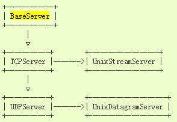
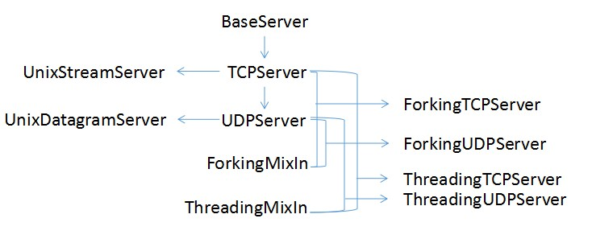
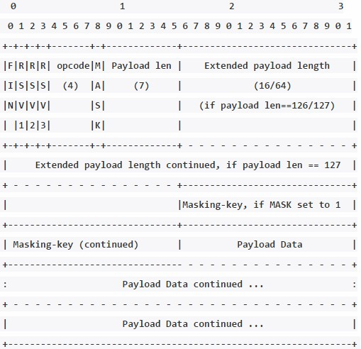

基于python的websocet服务端代码阅读
0x00 websocket的快速使用
WebSocket是一个基于HTTP协议的持久化的协议，用于服务端与客户端的长连接
快速上手的资源来源：
https://pypi.python.org/pypi?%3Aaction=search&term=websocket&submit=search
or
https://github.com/search?l=Python&q=websocket&type=Repositories&utf8=%E2%9C%93
推荐:
https://github.com/Pithikos/python-websocket-server
https://pypi.python.org/pypi/websocket-server/0.4
websocket_server的使用：
超方便，超喜欢！
提供了三个功能性函数和设定函数的接口：
- new_client （新客户端握手成功） ：set_fn_new_client()
- client_left （客户端关闭连接） ：set_fn_client_left()
- message_received （收到客户端的消息） ：set_fn_message_received()
两个server类的方法:
- send_message(client,message)
- send_message_to_all(msg)
from websocket_server import WebsocketServer
# Called for every client connecting (after handshake)
def new_client(client, server):
print("New client connected and was given id %d" % client['id'])
server.send_message_to_all("Hey all, a new client has joined us")
# Called for every client disconnecting
def client_left(client, server):
print("Client(%d) disconnected" % client['id'])
# Called when a client sends a message
def message_received(client, server, message):
if len(message) > 200:
message = message[:200]+'..'
print("Client(%d) said: %s" % (client['id'], message))
PORT=9001
server = WebsocketServer(PORT)
server.set_fn_new_client(new_client)
server.set_fn_client_left(client_left)
server.set_fn_message_received(message_received)
server.run_forever()
0x00 连接过程解析
websocket_server代码阅读
取出相应模块打造一个简单websocket服务端
1、SocketServer
server：
SocketServer是python的网络服务框架模块，提供了4种基础服务器类：
- BaseServer：所有服务器类的父类，定义了服务器类的所有方法接口，不直接使用
- TCPServer/UDPServer：同步TCP(服务器和客户端之间的连续数据流)/UDP服务器（无序间断的数据包）
- UnixStreamServer/UnixDatagramServer：使用Unix域套接字，适用于Unix平台
参数：
server_address（服务器地址）, RequestHandlerClass（请求处理器类）, bind_and_activate=True（绑定和监听服务器）
属性：
daemon_threads：指示服务器是否要等待线程终止，要是线程互相独立，必须要设置为True，默认是False
allow_reuse_address：地址的重用，设置allow_reuse_address = True（默认为False）

以上4种服务器同步传递数据，每个请求必须等到上一个请求完成之后才处理，为了实现进程和线程化，提供了一下几类：
- ForkingMixIn/ ThreadingMixIn：实现进程化/线程化，提供异步特性，不直接实例化
- ForkingTCPServer/ ForkingUDPServer：ForkingMixIn和TCPServer/UDPServer的组合类，继承了ForkingMixIn和TCPServer/UDPServer
- ThreadingTCPServer/ThreadingUDPServer：ThreadingMixIn和TCPServer/UDPServer的组合类，继承了ThreadingMixIn和TCPServer/UDPServer

handler：
请求处理类，提供一下三种：
- BaseRequestHandler：提供处理服务请求的核心功能，不能直接实例化
- StreamRequestHandler/ DatagramRequestHandler：用于TCP/UDP服务器的服务请求处理，派生于BaseRequestHandler
根据上面的特性，在程序中使用 ThreadingTCPServer和StreamRequestHandler
class MyStreamRequestHandler(StreamRequestHandler):
allow_reuse_address = True
daemon_threads = True
#……other settings
#重写handle函数
def handle(self):
#……some codes
2、websocket连接：Handshake
获取连接的http请求包：
GET / HTTP/1.1
Host: localhost:9999
Connection: Upgrade
Pragma: no-cache
Cache-Control: no-cache
Upgrade: websocket
Origin: file://
Sec-WebSocket-Version: 13
User-Agent: Mozilla/5.0 (Windows NT 6.1; WOW64) AppleWebKit/537.36 (KHTML, like Gecko) Chrome/50.0.2661.75 Safari/537.36
Accept-Encoding: gzip, deflate, sdch
Accept-Language: zh-CN,zh;q=0.8,zh-TW;q=0.6
Sec-WebSocket-Key: YtMH+mxpOjnwpBwj+hYVgg==
Sec-WebSocket-Extensions: permessage-deflate; client_max_window_bits
需要的参数：Upgrade，Sec-WebSocket-Key
- 根据Upgrade判断是否是websocket请求
- 生成Sec-WebSocket-Accept：
将Sec-WebSocket-Key和GUID（ GUID是一个固定值 ）合并，依次经过Sha1加密和Base64加密，生成Sec-WebSocket-Accept，返回给客户端 - 返回给客户端
HTTP/1.1 101 Switching Protocols
Upgrade: websocket
Connection: Upgrade
Sec-WebSocket-Accept: %s
tips：
老版的websocket的握手方式不同，key由请求包中的Sec-WebSocket-Key1、Sec-WebSocket-Key2和客户端握手请求的最后8个字节合并加密生成
handshake代码：
def handshake(self):
try:
#接收request包
data = self.request.recv(1024).decode('unicode-escape','ignore').strip()
print "receive from (%r):%r" % (self.client_address, data)
except:
traceback.print_exc()
#匹配upgrade，判断是否websocket请求
upgrade = re.search('\nupgrade[\s]*:[\s]*websocket', data.lower())
if not upgrade:
self.keep_alive = False
return
#获取Sec-WebSocket-Accept
key = re.search('\n[sS]ec-[wW]eb[sS]ocket-[kK]ey[\s]*:[\s]*(.*)\r\n', data)
if key:
key = key.group(1)
key_return = self.generate_token(key)
response = \
'HTTP/1.1 101 Switching Protocols\r\n'\
'Upgrade: websocket\r\n' \
'Connection: Upgrade\r\n' \
'Sec-WebSocket-Accept: %s\r\n' \
'\r\n' % key_return
#发送返回包
self.handshake_status = self.request.send(response)
#设置client连接状态为true
self.valid_client = True
else:
print("Client tried to connect but was missing a key")
self.keep_alive = False
2、websocket接收数据

- 0位，FIN，表示消息是否是最后一帧，1：最后一帧；0：非最后一帧
- 1-3位，RSV1，RSV2，RSV3，预留空间
- 4-7位，Opcode，表示数据类型，0x8：关闭连接, 0x0 为继续，0x1 文本 (以 utf-8 编码)，0x2 为二进制数据
第一个字节b1处理：
fin = b1 & 0x80
opcode = b1 & 0x0f
- 8位，MASK，定义payload数据是否进行了掩码处理，1：进行了掩码处理
- 9-15位，Payload len，payload数据的长度，126：payload长度位为7+16；127：payload长度位为7+64
第二个字节b2处理：
mask = b2 & 0x80
payload_length = b2 & 0x7f
- 16-79位 Extend payload length，payload长度扩展位
- 80-111位 Masking-key，MASK=1时，掩码解密密钥，MASK=0：无Masking-key
第三~十四字节处理：
payload_length == 126:
payload_length = struct.unpack(">H", self.rfile.read(2))[0]
elif payload_length == 127:
payload_length = struct.unpack(">Q", self.rfile.read(8))[0]
获取数据：
- 112-最后一位 Payload，传送的数据
继续从数据帧读取相应长度的字节，按位循环读取数据，并用掩码的已读取的数据长度对4取模位组来和当前获取到的数据异或
masks = map(ord,self.rfile.read(4))
decoded = ""
for char in map(ord,self.rfile.read(payload_length)):
char ^= masks[len(decoded) % 4]
decoded += chr(char)
3、websocket发送数据
服务端像客户端发送数据，不需要掩码加密
消息头：
- FIN:0x80 ，OPCODE：0x01（表示文本类型数据），或操作
header.append(FIN | OPCODE_TEXT)
- PAYLOAD_LENGTH:
# Normal payload 占7位
if payload_length <= 125:
header.append(payload_length)
# Extended payload 占7位+2个字节
elif payload_length >= 126 and payload_length <= 65535:
header.append(0x7e)
header.extend(struct.pack(">H", payload_length))
# Huge extended payload 占7位+8个字节
elif payload_length < 18446744073709551616:
header.append(0x7f)
header.extend(struct.pack(">Q", payload_length))
- PAYLOAD：
#payload编码
payload = bytearray(payload,'utf-8')
#发送给客户端
self.request.send(header + payload)
简单服务端结构：
class MyStreamRequestHandler(StreamRequestHandler):
allow_reuse_address = True
daemon_threads = True
#自定义参数
keep_alive = True
handshake_status = False
valid_client = False
def handle(self):
#自定义方法
def handshake(self):
def generate_token(self, key1)：
def read_message(self):
def send_message(self,message):
if __name__ == "__main__":
host = "127.0.0.1"
port = 9999
addr = (host, port)
server = ThreadingTCPServer(addr, MyStreamRequestHandler)
server.serve_forever()
最后，简单websocket服务端全代码：
# -*- coding: utf-8 -*-
from SocketServer import ThreadingTCPServer, StreamRequestHandler,TCPServer
import traceback
import re
import hashlib
import base64
import sys
import struct
FIN = 0x80
OPCODE = 0x0f
MASKED = 0x80
PAYLOAD_LEN = 0x7f
PAYLOAD_LEN_EXT16 = 0x7e
PAYLOAD_LEN_EXT64 = 0x7f
OPCODE_TEXT = 0x01
CLOSE_CONN = 0x8
class MyStreamRequestHandler(StreamRequestHandler):
allow_reuse_address = True
daemon_threads = True
keep_alive = True
handshake_status = False
valid_client = False
def handle(self):
while self.keep_alive:
if not self.handshake_status:
self.handshake()
elif self.valid_client:
self.read_message()
def handshake(self):
try:
data = self.request.recv(1024).decode('unicode-escape','ignore').strip()
print "receive from (%r):%r" % (self.client_address, data)
except:
traceback.print_exc()
upgrade = re.search('\nupgrade[\s]*:[\s]*websocket', data.lower())
if not upgrade:
self.keep_alive = False
return
key = re.search('\n[sS]ec-[wW]eb[sS]ocket-[kK]ey[\s]*:[\s]*(.*)\r\n', data)
if key:
key = key.group(1)
print key
key_return = self.generate_token(key)
print key_return
response = \
'HTTP/1.1 101 Switching Protocols\r\n'\
'Upgrade: websocket\r\n' \
'Connection: Upgrade\r\n' \
'Sec-WebSocket-Accept: %s\r\n' \
'\r\n' % key_return
self.handshake_status = self.request.send(response)
self.valid_client = True
else:
print("Client tried to connect but was missing a key")
self.keep_alive = False
def generate_token(self, key1):
key1 = key1.strip()
GUID = '258EAFA5-E914-47DA-95CA-C5AB0DC85B11'
str = key1+GUID
print str
str1 = hashlib.sha1(str).digest()
str2 = base64.b64encode(str1)
return str2
def read_message(self):
bytes = self.rfile.read(2)
b1,b2 = map(ord, bytes)
print b1,b2
fin = b1 & FIN
opcode = b1 & OPCODE
masked = b2 & MASKED
payload_length = b2&PAYLOAD_LEN
if not fin:
print("Client closed connection.")
self.keep_alive = 0
return
if opcode == CLOSE_CONN:
print("Client asked to close connection.")
self.keep_alive = 0
return
if not masked:
print("Client must always be masked.")
self.keep_alive = 0
return
if payload_length == 126:
payload_length = struct.unpack(">H", self.rfile.read(2))[0]
elif payload_length == 127:
payload_length = struct.unpack(">Q", self.rfile.read(8))[0]
masks = map(ord,self.rfile.read(4))
decoded = ""
for char in map(ord,self.rfile.read(payload_length)):
char ^= masks[len(decoded) % 4]
decoded += chr(char)
print decoded
if decoded =='123':
self.send_message('234')
def send_message(self,message):
if isinstance(message, bytes):
message = message.decode('utf-8') # this is slower but assures we have UTF-8
if not message:
print("Can\'t send message, message is not valid UTF-8")
return False
elif isinstance(message, str) or isinstance(message, unicode):
pass
else:
print('Can\'t send message, message has to be a string or bytes. Given type is %s' % type(message))
return False
header = bytearray()
payload = message.decode('utf-8')
payload_length = len(payload)
# Normal payload
if payload_length <= 125:
header.append(FIN | OPCODE_TEXT)
header.append(payload_length)
# Extended payload
elif payload_length >= 126 and payload_length <= 65535:
header.append(FIN | OPCODE_TEXT)
header.append(PAYLOAD_LEN_EXT16)
header.extend(struct.pack(">H", payload_length))
# Huge extended payload
elif payload_length < 18446744073709551616:
header.append(FIN | OPCODE_TEXT)
header.append(PAYLOAD_LEN_EXT64)
header.extend(struct.pack(">Q", payload_length))
else:
raise Exception("Message is too big. Consider breaking it into chunks.")
return
print payload
payload = bytearray(payload,'utf-8')
# 发送消息
# self.request.send(header + payload)
if __name__ == "__main__":
host = ""
port = 9999
addr = (host, port)
server = ThreadingTCPServer(addr, MyStreamRequestHandler)
server.serve_forever()